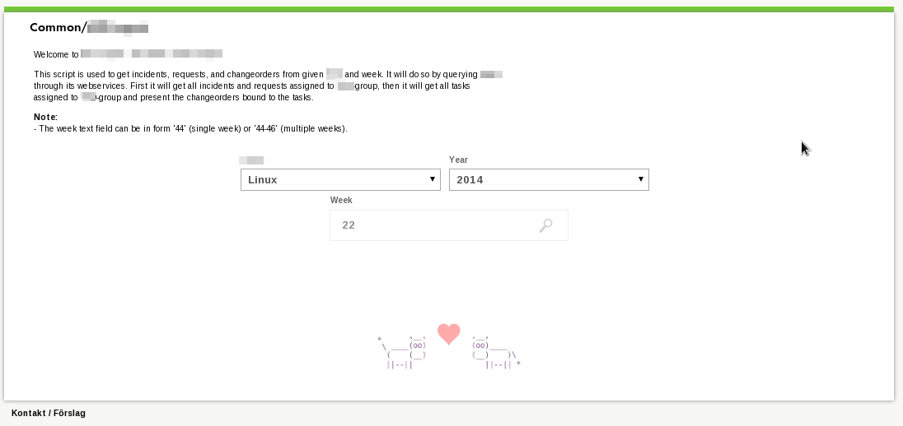
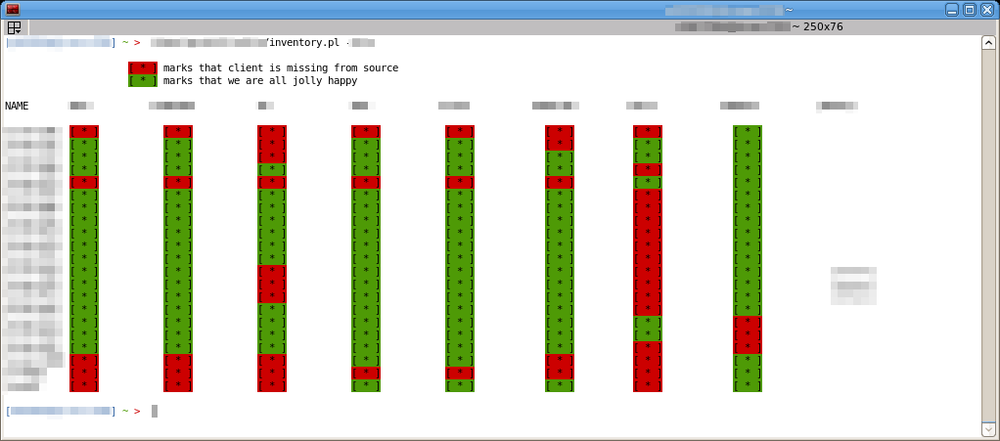
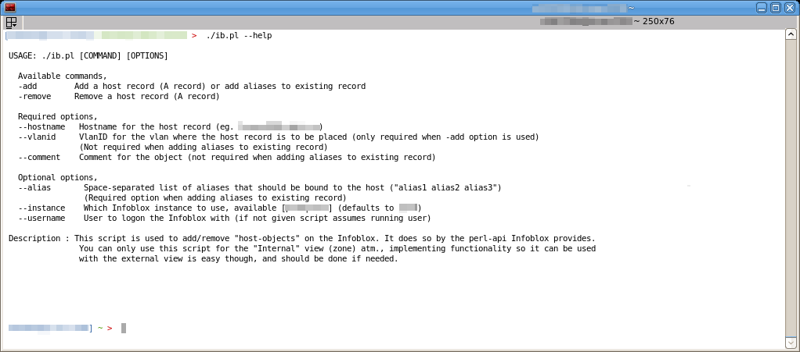
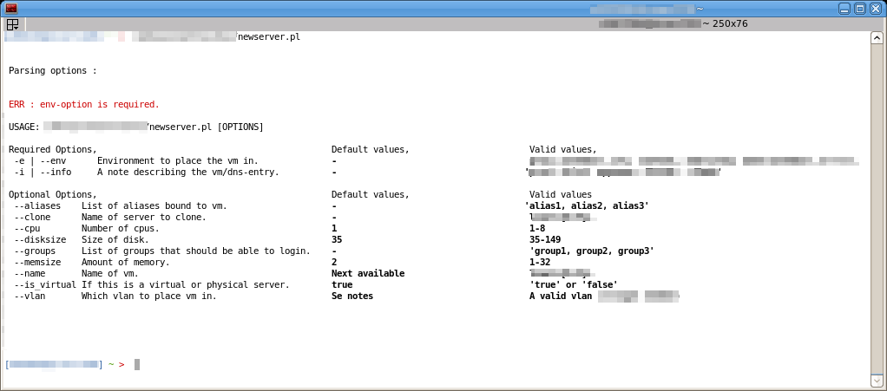
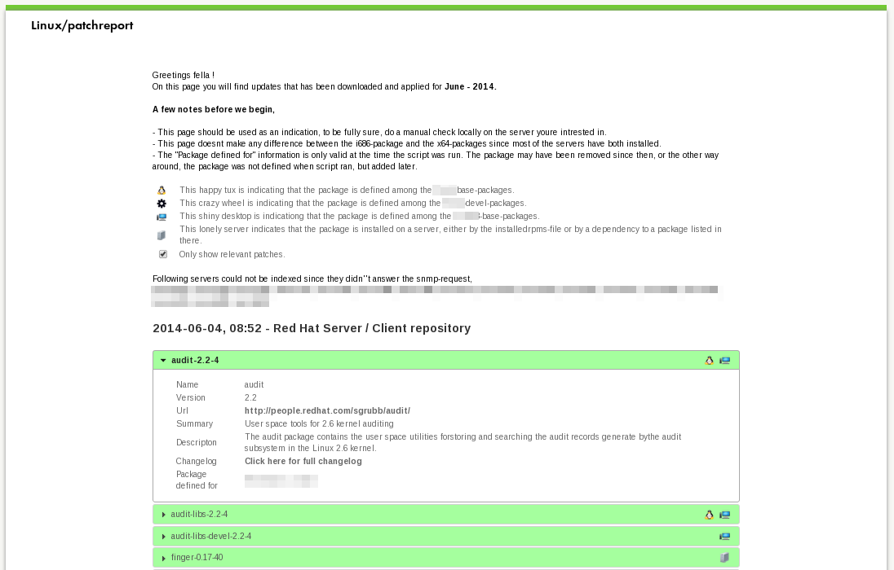
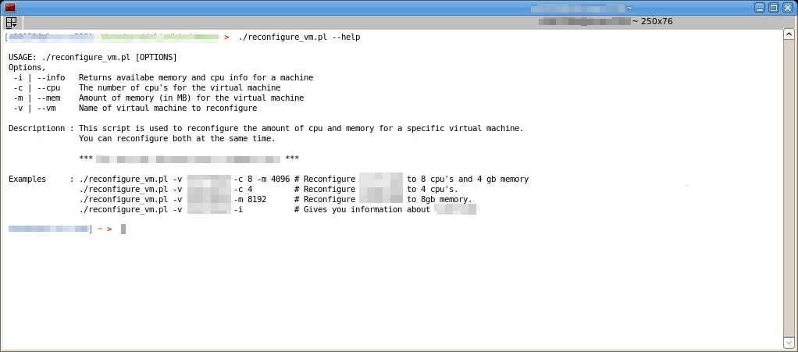
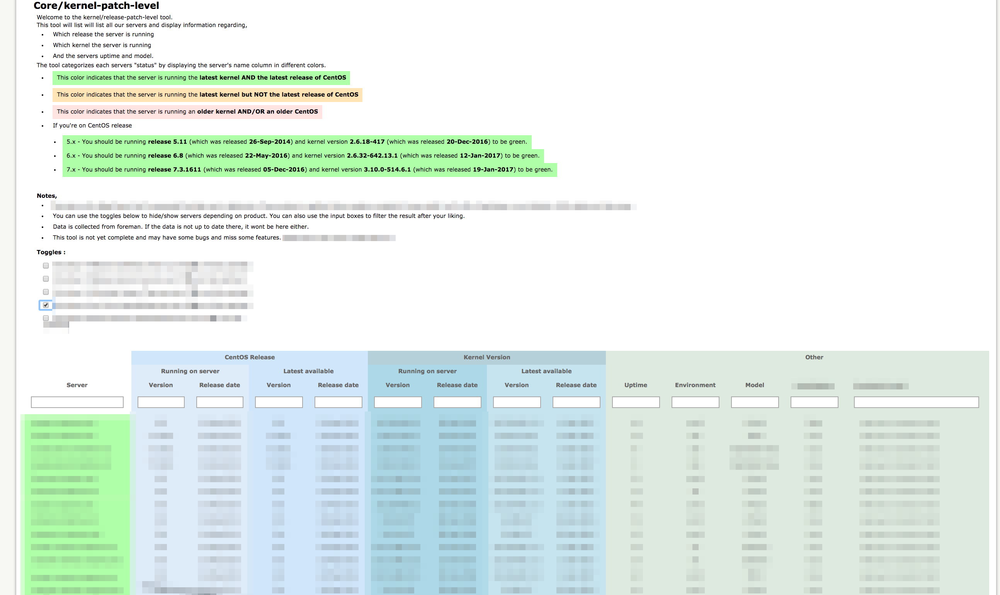
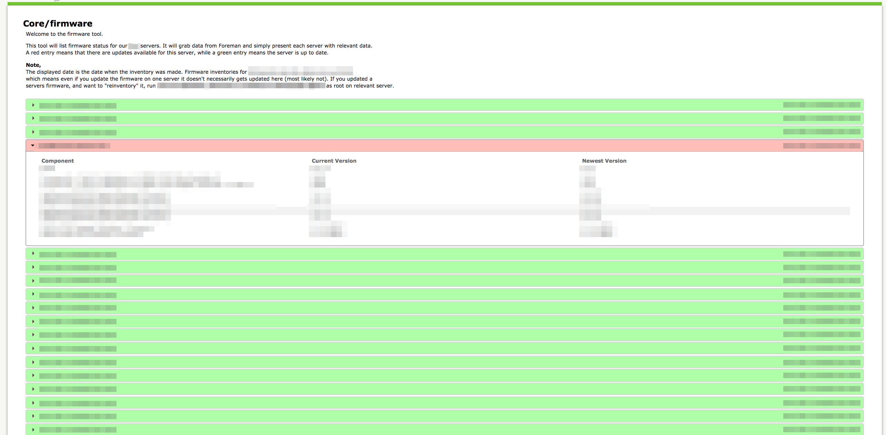
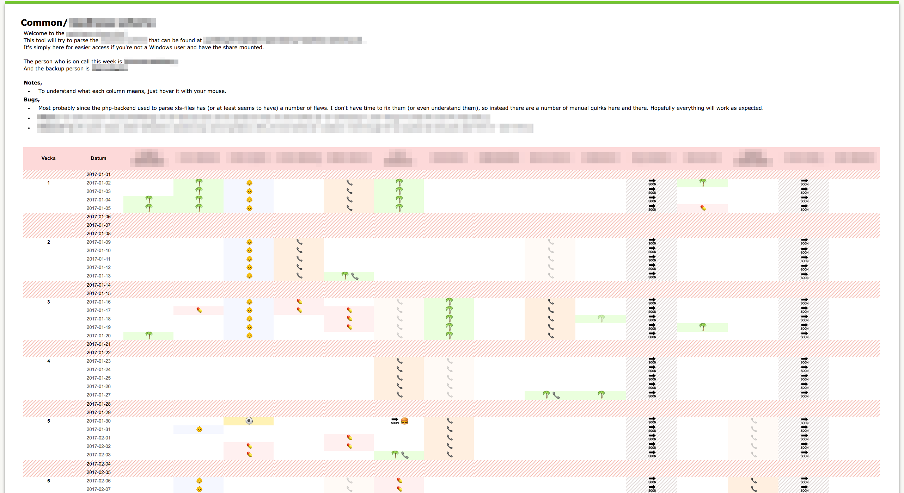

Patrik Martinsson
Works at TriOptima
Lives currently in Stockholm, Sweden
My name is Patrik Martinsson and I'm 34 years old, currently employed by TriOptima. I'm a small time 'hacker' that tries to contribute to the 'open source world' in various ways, mostly it's through bug-reports and 'a-couple-of-line-patches' ( glibc / golang-pastebin / Keepalived / NetworkManager / Samba / spotify-make / SSSD / puppet-host-package / PCSC-tools).
My 'day-to-day'-tasks consists of managing Red Hat Enterprise / Centos servers. Usually it involves making sure everything is up and running and that the setups are consistent. This is essentially done by puppet/ansible and various automation-scripts (preferable in bash/perl). I've done a lot of scripting (mostly in perl) to various parts of the infrastructure, this includes Cisco UCS, VMware, Infoblox, ILO, Foreman, Puppet, Monitor (which essentially is Nagios on steroids), Cacti, Various CA technologies products, etc.. As previously mentioned, my job often consists of setting up, configuring, reconfiguring, purging servers, so scripting is quite essential.
Usually a picture says more than thousands words (and the source-code may tell you even more, but since this is work that I do for my employer I cannot really show it), below are some examples of how the stuff usually looks and what technologies are involved, click on each picture to get the nifty details.
This is roughly ~1k lines of perl-code that will query various parts of our infrastructure to make sure all servers exists in expected "sources" (sources = different parts of the infrastructure). I tend to like a clean structural table-layout so you easily can interpret the output.
Language(s)
- Perl
Api's / Techniques
- Foreman / Infoblox / JSON / REST / VMware
This is roughly ~3k lines of perl-code that will do various infrastructure operations that's necessary for a server to be configured and available for usage. It includes creation of Infoblox objects, the actual creation of the virtual machine in VMware (including attaching network adapters, specified cpu/memory, etc..), creation in Foreman and Monitor. Roughly 90% of the code is 'just-making-sure-the-stars-are-aligned' whereas the other 10% is actual api-calls.
Language(s)
- Perl
Api's / Techniques
- Foreman / Hiera / Infoblox / JSON / LDAP / Monitor / Regular Expressions / REST / SVN / VMware
This is roughly ~500 lines of bash that will do summarize all the weekly downloaded patches. It will tell the developers which patches are installed in which environment. It will do so by collecting installed rpm's through snpm and compare them with the downloaded patches.
Language(s)
- Bash
Api's / Techniques
SNMP
This is roughly ~1k lines of perl-code that will query the 'CA ServiceDesk'- product through its webservices. It will gather Incidents / Changeorders / Request / Tasks for specified group within specified period and display it in a nicely column-based-format (there is no way of doing this within their own gui/product, not this cleanly anyway).
Language(s)
- Perl
Api's / Techniques
CA ServiceDesk Webservices (SOAP) / XML
This is roughly ~500 lines of perl-code that will do various Infoblox-operations, such as, add / remove A/CNAME-records within specified VLAN.
Language(s)
- Perl
Api's / Techniques
Infoblox
This is roughly ~300 lines of perl-code that will reconfigure vmware-servers through vSphere-api. It will allow you to reconfigure the servers CPU / RAM, and / or tell you how the server is configured.
Language(s)
- Perl
Api's / Techniques
VMware / vSphere
This is roughly ~200 lines of php-code that will query the foreman-api for kernel-information. It will also provide information about which is the latest available kernel. It will display everything in a very nice manner which will give you a good overview of your infrastructure.
Language(s)
- Perl / Php / Javascript (jquery)
Api's / Techniques
Foreman
This is roughly ~200 lines of bash/perl-code that will show you the firmware status on your servers. The firmware information is gathered and compiled into json-data and then pushed to foreman who is then queried by the fronted. The frontend then simply displays the information in nice manner.
Language(s)
- Bash / Perl / Php / Javascript (jquery)
Api's / Techniques
Foreman / Vendor firmware tool
This is roughly ~300 lines of php-code that will show parse an xls-file, and display it in a prettier way. It was developed to get an easier overview over our readiness / vacation-schedule.
Language(s)
- Php / Javascript (jquery)
Api's / Techniques
Excel-reader (php)
| CA Technologies  |
Inventory  |
Infoblox  |
| New Server  |
Patchreport  | Reconfigure VM  |
| Kernel Patch Level  | Server Firmware  | Parsing xls  |
{kind=link}
{kind=link}
{kind=link}
{kind=link}
{kind=link}
{kind=link}
{kind=link}
{kind=link}
{kind=link}
{kind=link}
{kind=link}
Sometimes I develop web-interfaces to our "internal customers" using techniques such as, AJAX / CSS / HTML / PHP / Various javascript libraries (angularjs, fancybox, jQuery, Oboe.js, etc..). The frontend would simply consist of a fancy web-interface while the backend could be anything (mostly perl though) and AJAX is used to glue them together.
You can view my full CV here.
Site is only tested in Google Chrome 55+ / Firefox 48+.